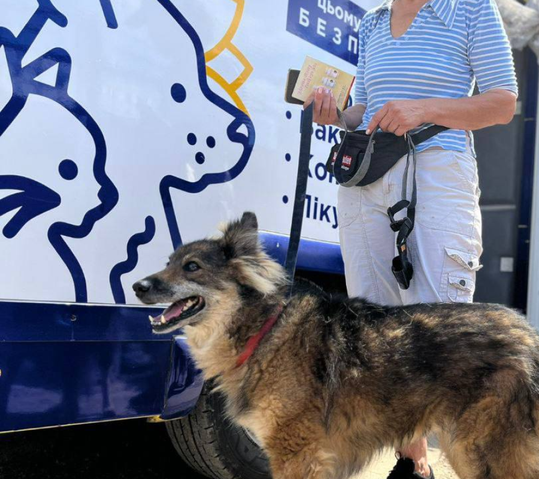
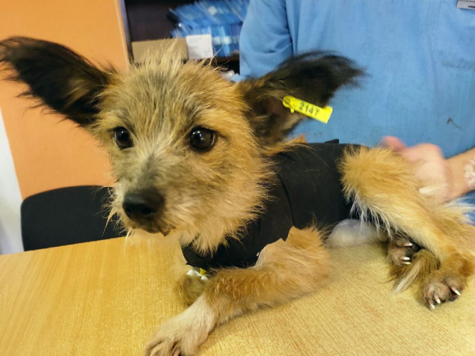

З початком повномасштабної війни наші зусилля зосереджені на порятунку тварин з зони бойових дій. Втім ще з 2016 року UAnimals пропагує гуманне ставлення до тварин та захищає їх від експлуатації і знущань. За цей час нам вдалося заборонити цирки з тваринами у трьох десятках міст, домовитися про відмову від натурального хутра з десятками дизайнерів, а також домогтися прийняття кількох важливих зоозахисних законів.
Якщо у вас є потреба отримати корм чи ліки для тварин, евакуювати їх із прифронтових територій, знайти донора для своєї тварини, проконсультуватися з юристами тощо, будь ласка:
Збір на стерилізацію 180 котів
Збір на лікування собаки Джека
Із початком повномасштабного вторгнення в Україні побільшало безпритульних тварин, а в прифронтових зонах їх стало вдвічі більше. Ці підрахунки приблизні, але масштаб проблеми величезний. Іноді люди евакуюються і полишають своїх тварин напризволяще. Іноді хазяї тварин гинуть… Покинуті тварини розмножуються, потерпають від голоду, хвороб та часто потрапляють під російські обстріли. Тому UAnimals вивозить із небезпечних зон котів, собак, тигрів, левів, верблюдів, коней, корів, єнотів, вовків, віслюків, дикобразів, лемурів, овець… Ми цінуємо кожне життя і рятуємо тварин, незалежно від їх виду, розміру чи породи.
Ми щодня звітуємо про свою діяльність у соціальних мережах UAnimals. Детальніше, ви можете ознайомитися з усіма фактами та цифрами в щомісячних звітах.
Долучайтеся до порятунку життів!